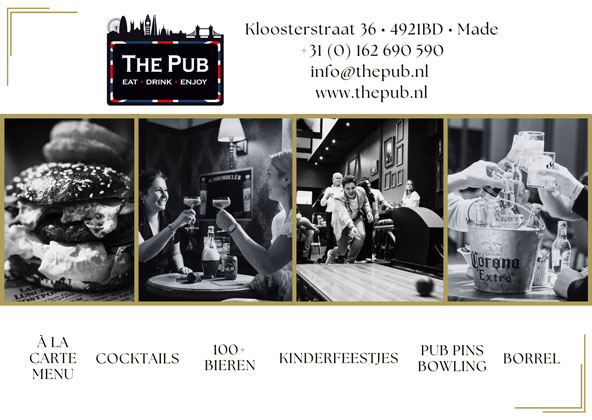

Dinsdag
Grill Night
vanaf € 18,50
Keuze uit een grillgerecht, inclusief 1 drankje. Van 17.00 tot 20.00 uur.

British Grand Café
Kloosterstraat 36 – Made
Een echte Britse pub in Made. Vers getapt bier, een stevige keuken, een open haard, een zonnig tuinterras en Pub Pins bowling.
De pub is een wereldberoemde Britse traditie en staat op het lijstje van iedere toerist die Groot-Brittannië bezoekt. Die traditie beleef je ook gewoon in Made.
Naast traditionele bieren, wijnen en andere dranken eet je hier een echte Britse maaltijd in Britse sfeer. Er is een open haard, er zijn familievriendelijke ruimtes en moderne faciliteiten. Het terras in de tuin ligt de hele dag in de zon en heeft honderd plekken: ideaal voor familie en groepen.

Dinsdag
vanaf € 18,50
Keuze uit een grillgerecht, inclusief 1 drankje. Van 17.00 tot 20.00 uur.
Woensdag
vanaf € 19,50
Keuze uit een schnitzel, inclusief 1 drankje. Van 17.00 tot 20.00 uur.
Alle grillgerechten komen met één side naar keuze (sommige sides tegen een kleine meerprijs). Burgers op pretzelbrood met steakhouse friet. Prijzen in euro.

175,00 voor 4 personen (+45,00 per extra persoon)
Rump steak, varkenshaasmedaillons, Engels worstje met spek, kipfilet, gegrilde tomaat, maïsribs, uienringen, steakhouse friet, rodekoolsalade en salade.

Upgrade: extra burger rund +7,00, kip +5,00 of falafel +7,00. Zoete-aardappelfriet +1,00.

Hoofdgerechten met friet en appelmoes, en keuze uit erwten, witte bonen in tomatensaus of salade.
Onze desserts staan op de tabletkaart in de pub. Al het ijs en sorbetijs komt van Enzo's IJssalon.
We houden de kaart zo actueel mogelijk, maar prijzen en beschikbaarheid kunnen wijzigen.
The Pub is een British gastro pub: goed eten en speciaalbieren in een echte pubsetting. De bierkaart wisselt steeds, met bieren uit de hele wereld en in bijna elke stijl. De focus ligt op Britse brouwerijen, aangevuld met speciaalbieren uit België, Amerika, Ierland en Brabant.
The Pub was de eerste die het traditionele vatbiertappen in Nederland introduceerde. In de kelder rijpt een eigen collectie bieren tot ze op hun best zijn.
Tap in 25 cl, 50 cl, half pint, UK pint of 1 liter.
De volledige fles- en blikkaart vind je op Untappd: van alcoholvrij, pils en IPA tot quad, stout en cider.
stand 19 november, wisselt regelmatig

A unique bowling experience
Pub Pins is een kortere versie van duckpin bowling: kleinere kegels en ballen zonder gaten, een kortere baan en drie kansen per beurt. Leuk voor iedereen, van kinderfeestje tot vrijdagmiddagborrel.
| 30 min | 1 uur | |
|---|---|---|
| ma t/m do | € 10 | € 15 |
| vr t/m zo | € 15 | € 20 |
Maximaal 6 personen per baan. Grotere groepen verdelen we over meerdere banen.
Baan reserveren€ 17,50 p.p. € 19,50 in de piek
Vanaf 6 personen.
vanaf € 38,50 p.p. € 40 in de piek
Vanaf 12 personen.
€ 15,50 per kind
Vanaf 6 kinderen.
€ 27,50 per kind
Vanaf 6 kinderen.
Nee, maar draag wel platte schoenen. Hakken laat je beter thuis.
Iedereen is welkom: de ballen zijn kleiner en lichter dan bij gewoon bowlen. Onder de 18 altijd in gezelschap van een meerderjarige.
Maximaal 6 personen per baan, per uur. Met een grotere groep verdelen we je over meerdere banen.
Reserveren is aanbevolen. Kom 15 minuten van tevoren. Met een groep van meer dan 20 personen? Neem eerst even contact met ons op.
Ja, dat kan. De voorwaarden staan in onze algemene voorwaarden.
Ja: een pooltafel, tafelvoetbal en airhockey. Die kun je niet reserveren, maar wel de hele dag spelen.

Groepsmenu's vanaf 12 personen. Je betaalt € 10 p.p. aan bij het reserveren, de rest op de dag zelf. Prijzen zijn vanafprijzen.
Soep van de dag (v) of champignons in beslag met rucola en zure room (v). Met ciabatta, olie en balsamico op tafel.
Fish & chips, schnitzel (varken of vegetarisch; naturel, pepersaus of champignonsaus), cheeseburger of falafelburger (v), varkenshaassaté met kroepoek, pindasaus, geroosterde uitjes en bosui, of steak & bierstoofpot in pastei of 5 bean chili (v). Met steakhouse friet op tafel.
Dame blanche met ijs van Enzo's.
Rivierkreeft-mangococktail, gehaktballetjes arrabiata of soep van de dag (v).
Hunters chicken, zalmfilet met kruidenboter en gegrilde citroen, biefstuk met gegrilde tomaat, met rode biet gevulde puntpaprika (v) of varkenshaassaté. Met steakhouse friet, rodekoolsalade en chef's salade.
Warme chocoladebrownie met vanille-roomijs of dame blanche.
Soep van de dag, rivierkreeft-mangococktail, pesto-carpacciotoast en gehaktballetjes arrabiata.
Medium biefstuk, kipfilet, varkenshaasmedaillons, Engels worstje in spek en zalmfilet (vegan: met rode biet gevulde puntpaprika). Met steakhouse friet, rodekoolsalade, uienringen, gegrilde tomaten, chef's salade en maïsribbetjes.
Eton mess, brownie en dame blanche.
Eerste kerstdag, vrijdag 25 december
€ 72,50 p.p. / € 29,50 per kind (3 t/m 11 jaar)
Van 16.30 tot 22.30 uur, 2,5 uur aan tafel. Huistap, huiswijnen, koffie, thee en frisdrank zijn inbegrepen; speciale dranken niet. Bij reserveren betaal je € 20 p.p. (vanaf 3 jaar) aan, niet-restitueerbaar en verrekend op de rekening. NIX18.
Kerst reserveren
Bestel je afhaalmaaltijd direct telefonisch bij ons, of laat bezorgen of haal af via Hebbes. Daar staat ook het afhaalmenu online.

Een cadeaubon van The Pub koop en haal je in de pub zelf. Te besteden aan eten, drinken en afhalen, zonder vervaldatum.
Niet inwisselbaar voor contant geld en niet geldig op feestdagen (zoals Kerst, Pasen, Carnaval en Koningsdag). In één keer besteden, er wordt geen wisselgeld gegeven. Niet te combineren met acties. NIX18. We zijn niet verantwoordelijk bij verlies of diefstal. Wijzigingen voorbehouden.
| Pub | Keuken | Pub Pins | |
|---|---|---|---|
| Maandag | gesloten | ||
| Dinsdag | 17.00 – laat | 17.00 – 20.30 | 17.00 – 22.00 |
| Woensdag | 14.00 – laat | 14.00 – 20.30 | 14.00 – 22.00 |
| Donderdag | 14.00 – laat | 14.00 – 20.30 | 14.00 – 22.00 |
| Vrijdag | 14.00 – 01.00 | 14.00 – 21.30 | 14.00 – 00.00 |
| Zaterdag | 14.00 – 01.00 | 14.00 – 21.30 | 14.00 – 00.00 |
| Zondag | 14.00 – laat | 14.00 – 20.30 | 14.00 – 22.00 |
Na sluiting van de keuken kun je tot sluitingstijd nog bestellen van de borrelkaart.
Werken in een Britse pub, samen met de eigenaren: een echtpaar uit Londen.
Samen met de eigenaren leiding geven in een pub met een 40/60-verdeling tussen drank en eten. Ruimte voor feesten tot 60 personen, 80 plekken aan tafel, borrels en de Orangerie met 36 plaatsen.
18+, 18 tot 38 uur per week, tot € 2.800 per maand.
15+, 3 tot 12 uur per week. Vanaf € 6,33 per uur plus fooi, vakantiegeld en personeelskorting.
Interesse? Mail naar info@thepub.nl of loop even binnen.